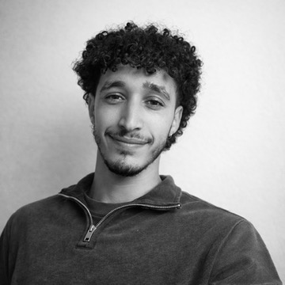

סיפורים
Stories find their seat
מהרצליה לים המלח לירושלים וחזרה. מלימודי תסריטאות לכתיבת קוד – מהמילה שמחפשת סאבטקסט לשורה שמחפשת לוגיקה. מהסצנה שלא נגמרת לבאג שלא משחרר.
בתוך כל התנועה הזאת, אני מוצא את עצמי מזגזג: בין הדמויות שחלמתי לברוא לאנשים שחלמתי להיות, ובין אלה שכל כך פחדתי להפוך אליהם. ובין כל המילים, השורות והזהויות – הכיסא תמיד נשאר אותו כיסא. לבדוק ניסוח
זה המקום שלי להניח את הראש ולנוח רגע.
תפסו כיסא, תצטרפו.
